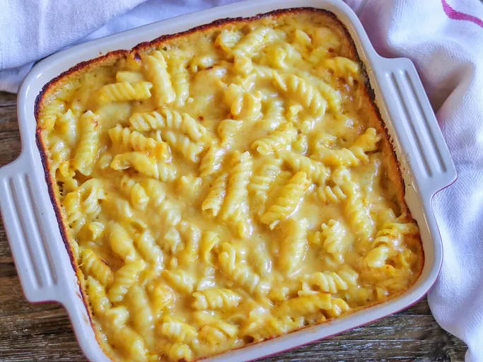

Cheese Pasta
To view other recipes: Home

Today Cook Orph will guide you to Italy!
The Recipe
Ingridients:
- 1 Can Condensed Cream
- Cheese
- 1 cup Milk
- Black Pepper
- 4 cups cooked corkscrew-shaped Pasta
Directions:
- Mix soup, cheeses, milk and black pepper in 1 1/2-qt. casserole. Stir in pasta.
- Stir it until it completely blends.
- Bake at 400 degrees F. for 20 min. or until hot.
- Garnish it and enjoy your free trip to Italy!